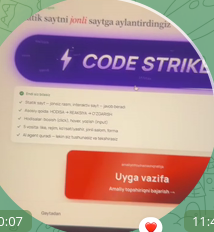
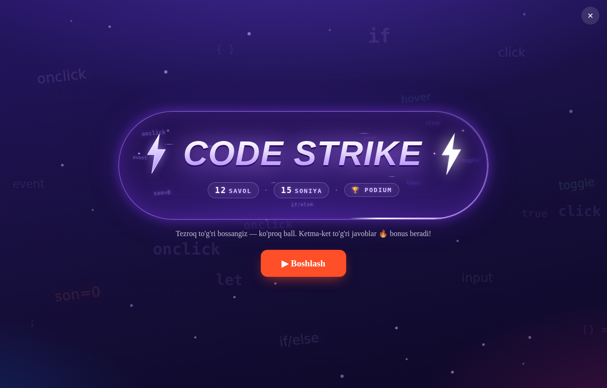
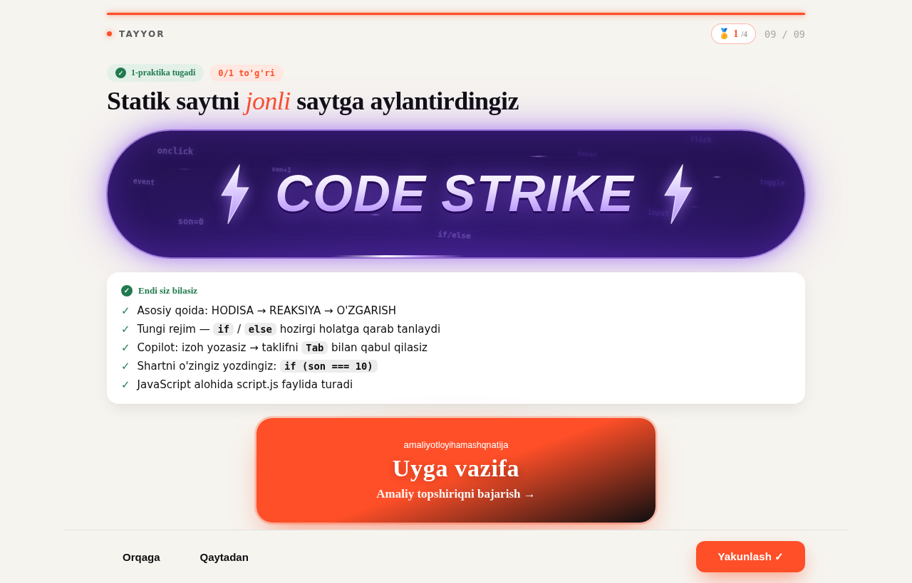

✅ Bajarildi 18.10 00:40 (qaror A, avtopilot): 71 darsda «Yakunlash» → «Yakunlandi ✓» + xabar, CODE STRIKE server xatosida xabar + mashq arenasi; DE 220. Jurnal: feedback/F-1017-mentor-2-6M/JURNAL.md. Quyidagisi — qaror paytidagi tashxis.
Mentor: «CODE STRIKE va Yakunlash ishlamayapti». Tekshirdim: bu bitta darsning xatosi emas — yakun ekrani hamma darsda bir xil qurilgan. Ikki tugma ikki xil sababdan «o'lik» ko'rinadi. Pastda dalil, sabab va variantlar.
202 · 204 · 213 («Buyurtma yo'li» 4 blok olindi) · 215 («Sahifa yig'amiz» A) · 216 (Tarozi A) · 221 (ReactFirstComponent A′ 23→19) · 225 (yakun ekrani A — 71 dars, DE 220).



Tugma bosilganda dars natijani LMS'ga uzatadi (onFinished), o'zi esa ekranda hech narsa o'zgartirmaydi — «Yakunlandi» yozuvi ham, tugmaning o'chishi ham yo'q. Ekranni yopish LMS ishi. O'quvchi uchun LMS natijani qabul qilib darsni yopadi — shuning uchun o'quvchida «ishlaydi». Mentor uchun LMS natijani olmaydi (mentor-sahifa, Bilimlar bazasi, yakshanbadan keyingi preview — LMS o'zi «bo'sh funksiya beraman» degan, IT javobi §6) → tugma bosilgan, lekin hech narsa ko'rinmaydi.
Bu barcha LMS 2–6 darslarida bir xil: birortasida ham yakundan keyingi holat yo'q (31 ta dars tekshirildi — 0 ta).
Mentor qaysi rejimda bo'lgani suratdan ko'rinmaydi — qayerdan ochganini so'rash kerak (pastda savol). Server loglarini (Dozzle) ko'rishga ruxsat berilmadi.
| Nima | Qamrov (LMS 2–6) | Holat |
|---|---|---|
| «Yakunlash ✓» dars ichida hech narsa ko'rsatmaydi | hamma dars (uy vazifalari ham) | 70/70 |
| CODE STRIKE mentor-rejimda server xatosini jim yutadi | hamma dars, 5 tasi boshqacha yozilgan (PmLesson3·4·6·7, ReactRouterPractice — alohida ko'riladi) | 65+ |
| CODE STRIKE solo / preview | — | ishlaydi |
Demak «muammoli darslar» ro'yxati yo'q — mexanizm hamma darsda bitta. Tuzatish ham bitta qolip bilan hammasiga.